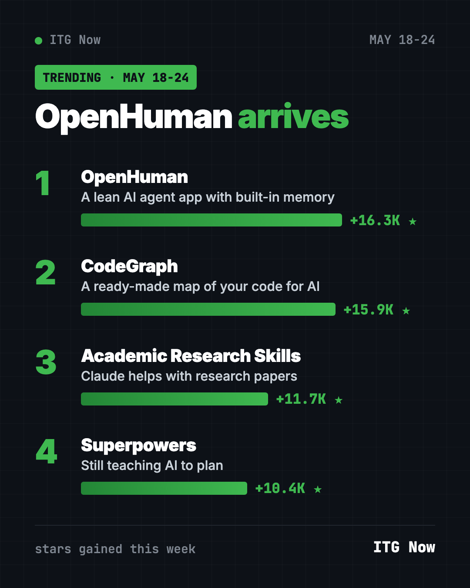
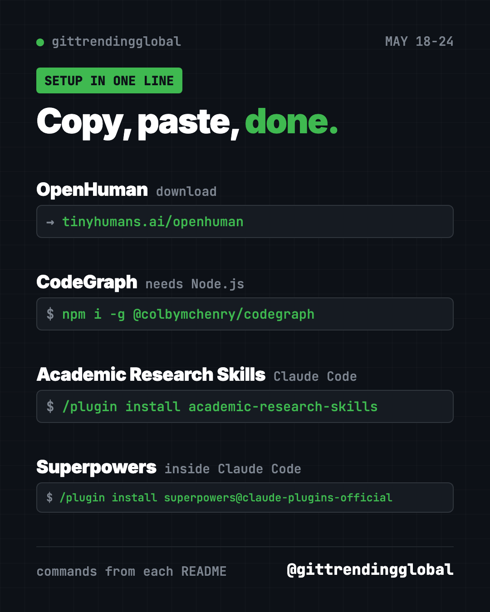

Home › Tools and repos › GitHub trending this week
Trending GitHub Projects May 18 2026: OpenHuman and More
- Published 15 Oct 2026
- Updated 16 Oct 2026
- 6 min read
- By the ITG Now team
The trending GitHub projects May 18 2026 list was led by a newcomer. OpenHuman, a lean AI agent app with built-in memory, gained about 16,300 stars. CodeGraph was close behind at about 15,900.
Academic Research Skills, a Claude toolkit for writing papers, came third. Superpowers made the list for the fourth time this spring. Our source tracked only four big gainers this week, so this is a top four.
Key takeaways
- OpenHuman is a desktop AI agent app that remembers your files and apps. Its README says it hit number one on GitHub Trending for nine days in a row.
- CodeGraph gives AI coding helpers a ready-made map of your code, so they search less and spend fewer tokens.
- Academic Research Skills helps Claude plan, write, check and revise research papers, with you approving each stage.
- Superpowers keeps returning. Planning before coding is a habit people want.

Four tools, one table
| Repo | What it does | Best for | Stars this week | License |
|---|---|---|---|---|
| OpenHuman | AI agent app with built-in memory | Everyday users, builders | +16.3K | GPL-3.0 |
| CodeGraph | Pre-built code map for AI helpers | Developers | +15.9K | MIT |
| Academic Research Skills | Research-to-paper skills for Claude | Students, researchers | +11.7K | CC BY-NC 4.0 |
| Superpowers | Plan, test and review habits for AI | Claude Code users | +10.4K | MIT |
Star gains cover May 18 to 24, 2026. Totals were checked on GitHub on October 16, 2026.
1. OpenHuman: a lean AI agent with a memory
Stars: +16.3K this week · about 42K total now
What it is: OpenHuman is a desktop app and an engine for AI agents. It has memory built in. Before each reply, it pulls the relevant bits from your files, repos, feeds and apps, and cites where they came from. It is written in Rust, a fast programming language, so it uses little memory. The README says 500 agents fit on a $10-a-month server.
Who it's for: People who want an AI helper that knows their stuff, and builders who need many cheap agents.
Everyday use: Ask "what did I decide about the kitchen quote last week?" and get an answer with the source note.
Install it: Download the app from tinyhumans.ai/openhuman, or use the script on Mac or Linux:
curl -fsSL https://raw.githubusercontent.com/tinyhumansai/openhuman/main/scripts/install.sh | bash
Or ask your AI helper:
Install OpenHuman from github.com/tinyhumansai/openhuman and help me connect one folder of notes to its memory.
⚠️ Heads up: The README calls OpenHuman an early beta, so expect rough edges. It can also control your browser and desktop apps; it asks before acting.
See OpenHuman on GitHub · Read our full guide
2. CodeGraph: a map of your code for AI helpers
Stars: +15.9K this week · about 74K total now
What it is: When an AI helper needs to understand code, it usually opens file after file. CodeGraph builds a map of every function and how they connect ahead of time. The AI asks the map once instead. It works with Claude Code, Cursor, Codex, Gemini and others, and runs 100% on your machine.
Who it's for: Developers who want faster, cheaper AI help on big projects.
Everyday use: Ask "what calls the payment function?" and get the answer in one step.
Install it: On Mac or Linux:
curl -fsSL https://raw.githubusercontent.com/colbymchenry/codegraph/main/install.sh | sh
codegraph install
Or ask your AI helper:
Install CodeGraph from github.com/colbymchenry/codegraph, index this project and connect it to Claude Code.
See CodeGraph on GitHub · Read our full guide
3. Academic Research Skills: Claude as a research co-pilot
Stars: +11.7K this week · about 52K total now
What it is: A suite of Claude Code skills that covers the path from research question to finished paper. It finds and checks references, drafts sections, runs review rounds and helps with revisions. It pauses for your OK at every stage. The README is clear it is not a "humanizer" for hiding AI use. It aims to help you write better.
Who it's for: Graduate students and researchers who use Claude.
Everyday use: Run /ars-plan, describe your thesis idea, and answer its questions to map out chapters.
Install it: Inside Claude Code:
/plugin marketplace add Imbad0202/academic-research-skills
/plugin install academic-research-skills
Or ask your AI helper:
Install academic-research-skills and use /ars-plan to help me outline a paper on urban heat islands.
💡 Tip: Its license (CC BY-NC 4.0) allows free personal and academic use but not commercial use. Also check your school's rules on AI help before you submit anything.
See Academic Research Skills on GitHub
4. Superpowers: the spring's most loyal trend
Stars: +10.4K this week · about 300K total now
What it is: A skill pack that makes AI coding helpers slow down and plan. It asks what you want, writes a short spec you can read, builds a step-by-step plan, then works through it and checks the results.
Who it's for: Anyone using Claude Code who wants fewer wrong turns.
Everyday use: Ask for a small booking page and agree on the plan before a line is written.
Install it: In Claude Code:
/plugin install superpowers@claude-plugins-official
Or ask your AI helper:
Install Superpowers from github.com/obra/superpowers and plan a tiny project with me step by step.
See Superpowers on GitHub · Read our full guide

Which one should you try first?
- Not a coder: start with OpenHuman. It is a normal app you download.
- Writing a thesis or paper: Academic Research Skills, if you already use Claude.
- Developer on a big project: CodeGraph.
- New to Claude Code: Superpowers is the gentlest upgrade.
For the full month, see the best GitHub repos of May 2026 and May 2026 AI news. The week before is May 11 to 17; next is May 25 to 31.
FAQ
What were the trending GitHub projects the week of May 18, 2026?
OpenHuman, CodeGraph, Academic Research Skills and Superpowers, ranked by stars gained.
Is OpenHuman free?
Yes. It is open source under GPL-3.0. You bring your own AI model, which may cost money.
Will Academic Research Skills write my paper for me?
It can draft text, but it stops at each stage for your decisions. Its README calls AI your copilot, not the pilot.
Does CodeGraph upload my code?
No. Its README says it runs 100% locally on your own machine.
Why only four repos this week?
Our weekly source listed four big gainers for May 18 to 24, 2026. We report only real numbers, so this week is a top four.
Keep reading

Trending GitHub Repos October 2026: The Top 5 So Far
The trending GitHub repos of October 2026 so far: a free Photoshop-style editor, an AI art studio, a big AI model for gaming PCs and more, explained.

Trending GitHub Repos This Week, Oct 5 2026: The Top 5
Trending GitHub repos this week Oct 5 2026: Matt Pocock's skills, the openGym workout tracker, e2e testing, HyperFrames video and claude-mem memory.

GitHub Trending September 28, 2026: Hindsight and Paperclip
GitHub trending September 28 2026: Hindsight, Paperclip, NVIDIA's OpenShell and a free 542-lesson AI course, with setup steps for each.